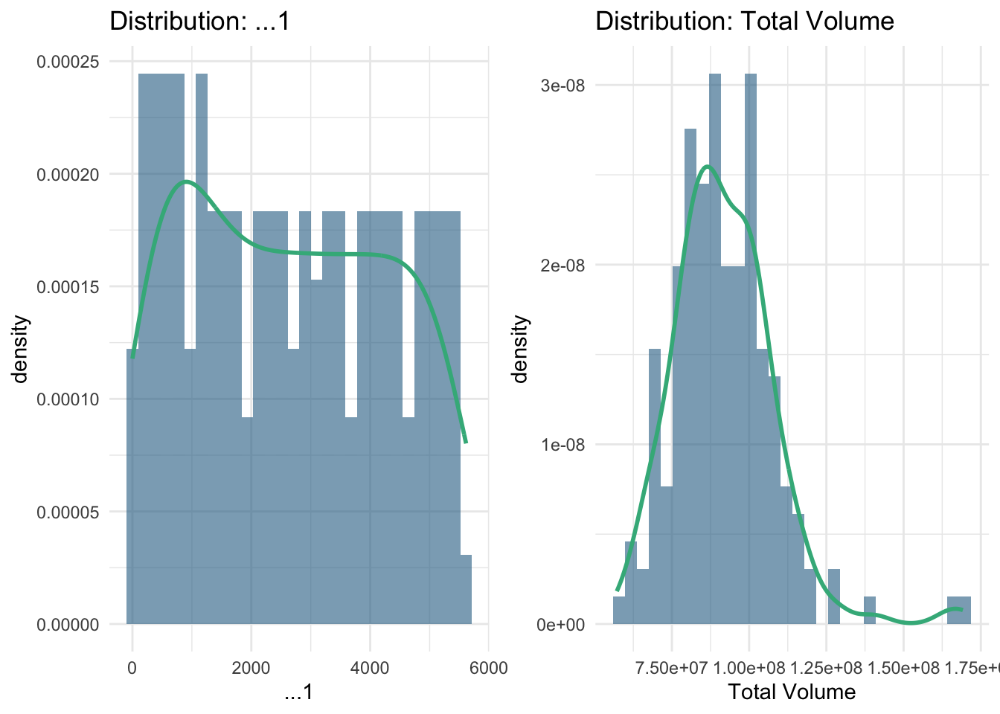
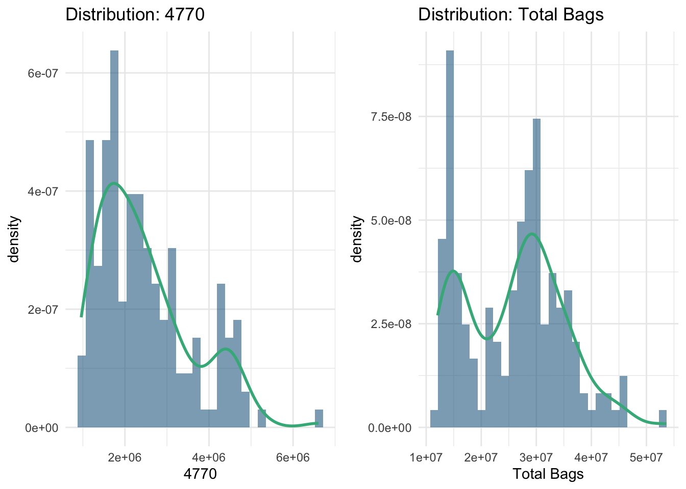
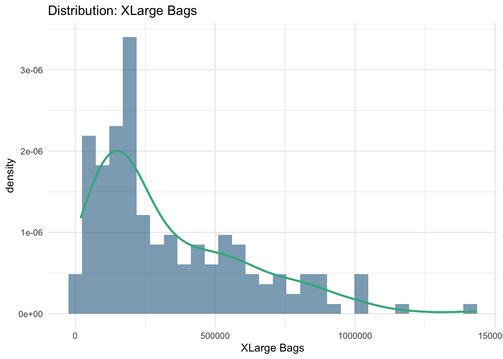
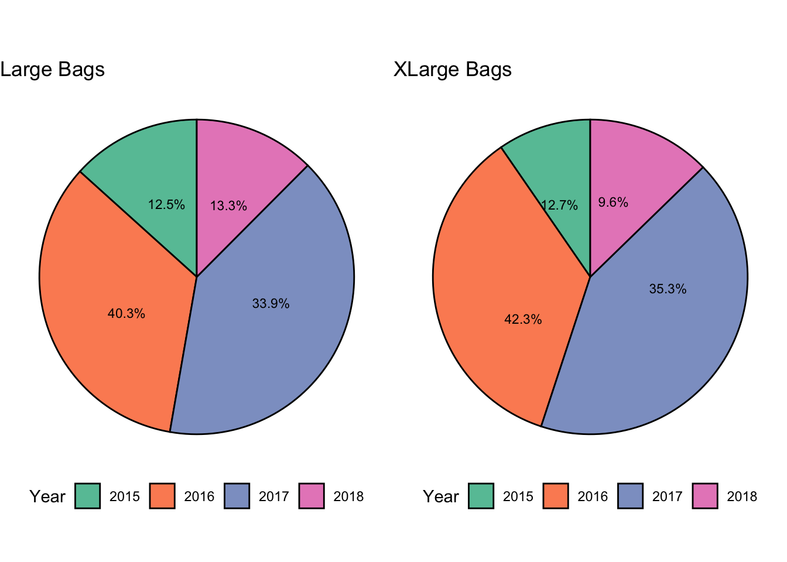

Warning: package 'reshape2' was built under R version 4.2.3
Attaching package: 'reshape2'
The following object is masked from 'package:tidyr':
smiths
Code
# Assuming 'data' is your dataframe# Melt the dataframe to long formatdata_melt <-melt(is.na(data))# Create a heatmapggplot(data_melt, aes(x = Var2, y = Var1, fill = value)) +geom_tile() +scale_fill_manual(values =c("TRUE"="purple", "FALSE"="black")) +theme_minimal() +theme(axis.text.x =element_text(angle =90, hjust =1), legend.position ="none")
Numerical Summary
Code
data %>%summary()
...1 Date AveragePrice Total Volume
Min. : 0.00 Min. :2015-01-04 Min. :0.440 Min. : 85
1st Qu.:10.00 1st Qu.:2015-10-25 1st Qu.:1.100 1st Qu.: 10839
Median :24.00 Median :2016-08-14 Median :1.370 Median : 107377
Mean :24.23 Mean :2016-08-13 Mean :1.406 Mean : 850644
3rd Qu.:38.00 3rd Qu.:2017-06-04 3rd Qu.:1.660 3rd Qu.: 432962
Max. :52.00 Max. :2018-03-25 Max. :3.250 Max. :62505647
4046 4225 4770 Total Bags
Min. : 0 Min. : 0 Min. : 0 Min. : 0
1st Qu.: 854 1st Qu.: 3009 1st Qu.: 0 1st Qu.: 5089
Median : 8645 Median : 29061 Median : 185 Median : 39744
Mean : 293008 Mean : 295155 Mean : 22840 Mean : 239639
3rd Qu.: 111020 3rd Qu.: 150207 3rd Qu.: 6243 3rd Qu.: 110783
Max. :22743616 Max. :20470573 Max. :2546439 Max. :19373134
Small Bags Large Bags XLarge Bags type
Min. : 0 Min. : 0 Min. : 0.0 Length:18249
1st Qu.: 2849 1st Qu.: 127 1st Qu.: 0.0 Class :character
Median : 26363 Median : 2648 Median : 0.0 Mode :character
Mean : 182195 Mean : 54338 Mean : 3106.4
3rd Qu.: 83338 3rd Qu.: 22029 3rd Qu.: 132.5
Max. :13384587 Max. :5719097 Max. :551693.7
year region
Min. :2015 Length:18249
1st Qu.:2015 Class :character
Median :2016 Mode :character
Mean :2016
3rd Qu.:2017
Max. :2018
Agregating data for weeks.
Code
library(lubridate)
Warning: package 'lubridate' was built under R version 4.2.3
Code
# Create a deep copy of the data framedf1 <- data# Convert the 'Date' column to Date typedf1$Date <-ymd(df1$Date)# Arrange the data by Date and create a week columndf1 <- df1 %>%arrange(Date) %>%mutate(week =floor_date(Date, "week"))# Group by the week column and summarise the numeric columnsdf1 <- df1 %>%group_by(week) %>%summarise(across(where(is.numeric), ~sum(., na.rm =TRUE)))# Display the first few rows of the resulting data framehead(df1)
Warning: package 'gridExtra' was built under R version 4.2.2
Attaching package: 'gridExtra'
The following object is masked from 'package:dplyr':
combine
Code
# Assuming 'data' and 'df1' are your dataframes# Color palettecolor1 <-c('#296C92', '#3EB489')# First subplot: Distribution of AveragePrice in 'data'p1 <-ggplot(data, aes(x = AveragePrice)) +geom_histogram(aes(y = ..density..), bins =30, fill = color1[1], alpha =0.6) +geom_density(color = color1[1], size =1) +ggtitle('Distribution: AveragePrice') +theme_minimal()
Warning: Using `size` aesthetic for lines was deprecated in ggplot2 3.4.0.
ℹ Please use `linewidth` instead.
Code
# Second subplot: Distribution of AveragePrice in 'df1'p2 <-ggplot(df1, aes(x = AveragePrice)) +geom_histogram(aes(y = ..density..), bins =30, fill = color1[2], alpha =0.6) +geom_density(color = color1[2], size =1) +ggtitle('Distribution: AveragePrice') +theme_minimal()# Arrange the first two plots side by sidegrid.arrange(p1, p2, ncol =2)
Warning: The dot-dot notation (`..density..`) was deprecated in ggplot2 3.4.0.
ℹ Please use `after_stat(density)` instead.
Code
# Third subplot: Line plot of AveragePrice vs Date in 'df1'# Assuming 'Date' is a column in 'df1'p3 <-ggplot(df1, aes(x = week, y = AveragePrice, group =1)) +geom_line(color = color1[1]) +ggtitle('AveragePrice vs Date') +theme_minimal()# Display the third plotgrid.arrange(p3, ncol =1)
Listing columns by data types.
Code
# Get column namescol <-names(data)# Initialize lists to store categorical and numerical featurescategorical_features <-c()numerical_features <-c()# Iterate through columnsfor (i in col) {if (length(unique(data[[i]])) >6) { numerical_features <-c(numerical_features, i) } else { categorical_features <-c(categorical_features, i) }}# Remove specific features from numerical featuresnumerical_features <- numerical_features[!numerical_features %in%c('Date', 'AveragePrice', 'region')]# Print categorical and numerical featurescat('Categorical Features:', paste(categorical_features, collapse =', '), '\n')
Numerical Features: ...1, Total Volume, 4046, 4225, 4770, Total Bags, Small Bags, Large Bags, XLarge Bags
Plotting distribution by year.
Code
# Load necessary librarieslibrary(ggplot2)library(gridExtra)# Convert 'type' column to factor using LabelEncoderdata$type <-as.factor(data$type)# Create subplots for distribution and count plotsp_distribution <-lapply(categorical_features, function(feature) {ggplot(data, aes(x =!!sym(feature))) +geom_density(fill ="#296C92", alpha =0.6) +ggtitle(paste("Distribution:", feature)) +theme_minimal()})p_count <-lapply(categorical_features, function(feature) {ggplot(data, aes(x =!!sym(feature), fill =!!sym(feature))) +geom_bar() +scale_fill_manual(values =c("#296C92", "#3EB489")) +ggtitle(paste("Count:", feature)) +theme_minimal()})# Combine plots into gridgrid.arrange(grobs = p_distribution, ncol =2)
Code
grid.arrange(grobs = p_count, ncol =2)
Warning: The following aesthetics were dropped during statistical transformation: fill
ℹ This can happen when ggplot fails to infer the correct grouping structure in
the data.
ℹ Did you forget to specify a `group` aesthetic or to convert a numerical
variable into a factor?
Categorical Features vs Target Variable (AveragePrice) :
Code
# Load necessary librarieslibrary(ggplot2)library(gridExtra)# Assuming 'data' is your dataframe and 'categorical_features' is your list of categorical features# Define your color palettecolor1 <-c('#296C92', '#3EB489')# Create a list to hold the plotsplots <-list()# Loop through each categorical feature and create a bar plotfor (i inseq_along(categorical_features)) { p <-ggplot(data, aes_string(x = categorical_features[i], y ='AveragePrice', fill = categorical_features[i])) +geom_bar(stat ="summary", fun ="mean", color ='black', fill = color1[i %%length(color1) +1]) +ggtitle(paste(categorical_features[i], 'vs AveragePrice')) +theme_minimal() +theme(legend.position ="none") plots[[i]] <- p}
Warning: `aes_string()` was deprecated in ggplot2 3.0.0.
ℹ Please use tidy evaluation idioms with `aes()`.
ℹ See also `vignette("ggplot2-in-packages")` for more information.
Code
# Arrange the plots side by sidedo.call(grid.arrange, c(plots, ncol =2))
Numerical Features : Distribution of Numerical Features :
Code
# Load necessary librarieslibrary(ggplot2)# Assuming 'df1' is your dataframe and 'numerical_features' is your list of numerical features# Determine the total number of featurestotal_features <-length(numerical_features)# Determine the number of full rows neededn_full_rows <-floor(total_features /2)# Loop through each numerical feature and create a distribution plotfor (i inseq(1, by =2, length.out = n_full_rows)) { p1 <-ggplot(df1, aes_string(x =paste0('`', numerical_features[i], '`'))) +geom_histogram(aes(y = ..density..), bins =30, fill ='#296C92', alpha =0.6) +geom_density(color ='#3EB489', size =1) +ggtitle(paste('Distribution:', numerical_features[i])) +theme_minimal()# Check if there's a second plot to addif (i +1<= total_features) { p2 <-ggplot(df1, aes_string(x =paste0('`', numerical_features[i +1], '`'))) +geom_histogram(aes(y = ..density..), bins =30, fill ='#296C92', alpha =0.6) +geom_density(color ='#3EB489', size =1) +ggtitle(paste('Distribution:', numerical_features[i +1])) +theme_minimal()grid.arrange(p1, p2, ncol =2) } else {# If there's only one plot left, print it as the last plot in a rowprint(p1) }}


Code
# If there's an odd number of features, print the last feature aloneif (total_features %%2!=0) { last_feature_index <- total_features last_p <-ggplot(df1, aes_string(x =paste0('`', numerical_features[last_feature_index], '`'))) +geom_histogram(aes(y = ..density..), bins =30, fill ='#296C92', alpha =0.6) +geom_density(color ='#3EB489', size =1) +ggtitle(paste('Distribution:', numerical_features[last_feature_index])) +theme_minimal()print(last_p)}

Code
# Load necessary librarieslibrary(dplyr)library(ggplot2)# Assuming your data is in a dataframe named 'data'# Calculate percentages for each feature based on typetotal_volume <-sum(data[data$type =='conventional',]$`Total Volume`) /sum(data$`Total Volume`) *100total_volume <-c(total_volume, sum(data[data$type =='organic',]$`Total Volume`) /sum(data$`Total Volume`) *100)avocado_4046 <-sum(data[data$type =='conventional',]$`4046`) /sum(data$`4046`) *100avocado_4046 <-c(avocado_4046, sum(data[data$type =='organic',]$`4046`) /sum(data$`4046`) *100)avocado_4225 <-sum(data[data$type =='conventional',]$`4225`) /sum(data$`4225`) *100avocado_4225 <-c(avocado_4225, sum(data[data$type =='organic',]$`4225`) /sum(data$`4225`) *100)avocado_4770 <-sum(data[data$type =='conventional',]$`4770`) /sum(data$`4770`) *100avocado_4770 <-c(avocado_4770, sum(data[data$type =='organic',]$`4770`) /sum(data$`4770`) *100)total_bags <-sum(data[data$type =='conventional',]$`Total Bags`) /sum(data$`Total Bags`) *100total_bags <-c(total_bags, sum(data[data$type =='organic',]$`Total Bags`) /sum(data$`Total Bags`) *100)small_bags <-sum(data[data$type =='conventional',]$`Small Bags`) /sum(data$`Small Bags`) *100small_bags <-c(small_bags, sum(data[data$type =='organic',]$`Small Bags`) /sum(data$`Small Bags`) *100)large_bags <-sum(data[data$type =='conventional',]$`Large Bags`) /sum(data$`Large Bags`) *100large_bags <-c(large_bags, sum(data[data$type =='organic',]$`Large Bags`) /sum(data$`Large Bags`) *100)xlarge_bags <-sum(data[data$type =='conventional',]$`XLarge Bags`) /sum(data$`XLarge Bags`) *100xlarge_bags <-c(xlarge_bags, sum(data[data$type =='organic',]$`XLarge Bags`) /sum(data$`XLarge Bags`) *100)# Combine percentages into a data frametype_numerical_features_percentage <-data.frame(feature =rep(c("Total Volume", "4046", "4225", "4770", "Total Bags", "Small Bags", "Large Bags", "XLarge Bags"), each =2),type =rep(c("Conventional", "Organic"), times =8),percentage =c(total_volume, avocado_4046, avocado_4225, avocado_4770, total_bags, small_bags, large_bags, xlarge_bags))# Create the plotggplot(type_numerical_features_percentage, aes(x = feature, y = percentage, fill = type)) +geom_bar(stat ="identity", position =position_dodge()) +geom_text(aes(label =paste0(round(percentage, 1), "%")), position =position_dodge(width =0.9), vjust =-0.5, size =3) +labs(title ="Percentage Contribution by Feature Type", fill ="Type", x ="Feature", y ="Percentage") +theme_classic() +theme(plot.title =element_text(hjust =0.5))
Code
# Load necessary librarieslibrary(dplyr)library(ggplot2)library(gridExtra)# Assume `data` is already loaded as a data frame with the same structure# Calculate percentages for each numerical feature per yeartotal_volume <- data %>%group_by(year) %>%summarize(Total_Volume =sum(`Total Volume`)) %>%mutate(Percentage = Total_Volume /sum(Total_Volume) *100)avocado_4046 <- data %>%group_by(year) %>%summarize(avocado_4046 =sum(`4046`)) %>%mutate(Percentage = avocado_4046 /sum(avocado_4046) *100)avocado_4225 <- data %>%group_by(year) %>%summarize(avocado_4225 =sum(`4225`)) %>%mutate(Percentage = avocado_4225 /sum(avocado_4225) *100)avocado_4770 <- data %>%group_by(year) %>%summarize(avocado_4770 =sum(`4770`)) %>%mutate(Percentage = avocado_4770 /sum(avocado_4770) *100)total_bags <- data %>%group_by(year) %>%summarize(Total_Bags =sum(`Total Bags`)) %>%mutate(Percentage = Total_Bags /sum(Total_Bags) *100)small_bags <- data %>%group_by(year) %>%summarize(Small_Bags =sum(`Small Bags`)) %>%mutate(Percentage = Small_Bags /sum(Small_Bags) *100)large_bags <- data %>%group_by(year) %>%summarize(Large_Bags =sum(`Large Bags`)) %>%mutate(Percentage = Large_Bags /sum(Large_Bags) *100)xlarge_bags <- data %>%group_by(year) %>%summarize(XLarge_Bags =sum(`XLarge Bags`)) %>%mutate(Percentage = XLarge_Bags /sum(XLarge_Bags) *100)# Combine all percentages into one data frame for easier plottingpercentage_data <-data.frame(year =rep(2015:2018, 8),feature =rep(c("Total Volume", "4046", "4225", "4770", "Total Bags", "Small Bags", "Large Bags", "XLarge Bags"), each =4),percentage =c(total_volume$Percentage, avocado_4046$Percentage, avocado_4225$Percentage, avocado_4770$Percentage, total_bags$Percentage, small_bags$Percentage, large_bags$Percentage, xlarge_bags$Percentage))# Define colorscolor1 <-c("#66c2a5", "#fc8d62", "#8da0cb", "#e78ac3")# Create labels for pie chart segmentspercentage_data <- percentage_data %>%group_by(feature) %>%mutate(ypos =cumsum(percentage) -0.5* percentage)# Function to create individual pie chartscreate_pie_chart <-function(feature_name) {ggplot(percentage_data %>%filter(feature == feature_name), aes(x ="", y = percentage, fill =factor(year))) +geom_bar(stat ="identity", width =1, color ="black") +coord_polar(theta ="y") +geom_text(aes(y = ypos, label =sprintf("%.1f%%", percentage)), color ="black", size =3) +scale_fill_manual(values = color1) +theme_void() +theme(strip.text =element_text(size =12, face ="bold"),legend.position ="bottom" ) +labs(fill ="Year", title = feature_name)}# Create individual pie chartsplots <-lapply(unique(percentage_data$feature), create_pie_chart)# Arrange pie charts in a grid of 2grid_plots <-lapply(seq(1, length(plots), by =2), function(i) {grid.arrange(grobs = plots[i:min(i+1, length(plots))], ncol =2)})

Code
# Display the plotsfor (g in grid_plots) {print(g)}
TableGrob (1 x 2) "arrange": 2 grobs
z cells name grob
1 1 (1-1,1-1) arrange gtable[layout]
2 2 (1-1,2-2) arrange gtable[layout]
TableGrob (1 x 2) "arrange": 2 grobs
z cells name grob
1 1 (1-1,1-1) arrange gtable[layout]
2 2 (1-1,2-2) arrange gtable[layout]
TableGrob (1 x 2) "arrange": 2 grobs
z cells name grob
1 1 (1-1,1-1) arrange gtable[layout]
2 2 (1-1,2-2) arrange gtable[layout]
TableGrob (1 x 2) "arrange": 2 grobs
z cells name grob
1 1 (1-1,1-1) arrange gtable[layout]
2 2 (1-1,2-2) arrange gtable[layout]